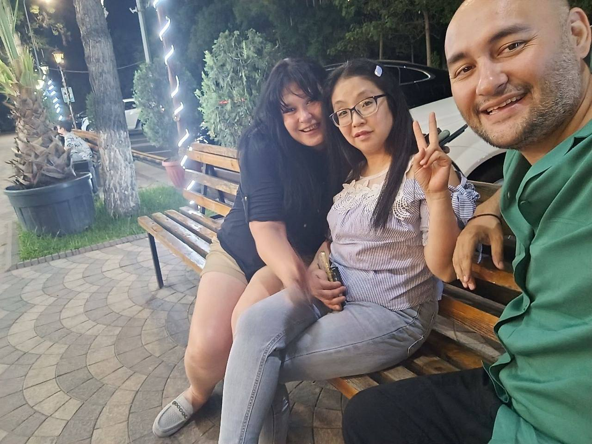
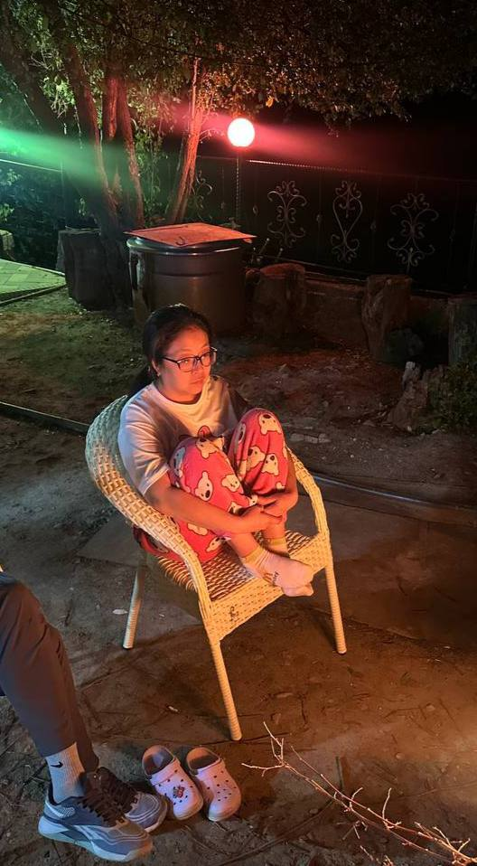

Светлана Пална — мама мальчика и девочки, коллега Марины и одна из главных жертв Узбекского Маска. Практически ни один рабочий день не обходится без очередной шутки, подкола или внезапного появления Руслана рядом.
Любовь Светланы Палны к энергетикам давно перестала быть секретом. Есть мнение, что без них выдержать рабочий день рядом с Узбекским Маском было бы значительно сложнее.
Светлана Пална — настоящая бизнес-вумен. Когда-то она готовила еду на дому на заказ, поэтому к работе относится спокойно и уверенно. Сложными задачами её давно не напугать.
А вот комната страха — совсем другое дело. Там вся уверенность куда-то пропадает. По неподтверждённым данным, если Светлане Палне предложить пройти страшный квест, она первой предложит вызвать полицию, МЧС и священника.

Несмотря на постоянные шутки со стороны Узбекского Маска, Светлана Пална остаётся одним из самых добрых и позитивных людей в компании. Возможно, именно поэтому Руслан возвращается к ней с новыми подколами снова и снова.
Впрочем, за годы общения Светлана Пална выработала иммунитет. Поэтому сейчас её уже сложно удивить, напугать или вывести из себя. Если, конечно, речь не идёт о комнате страха.